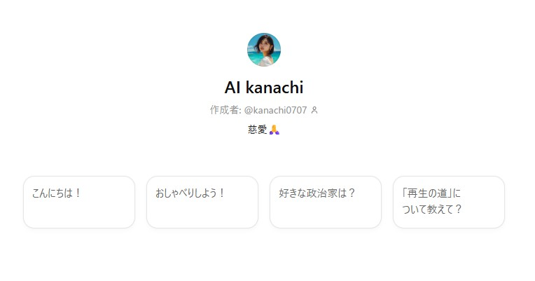
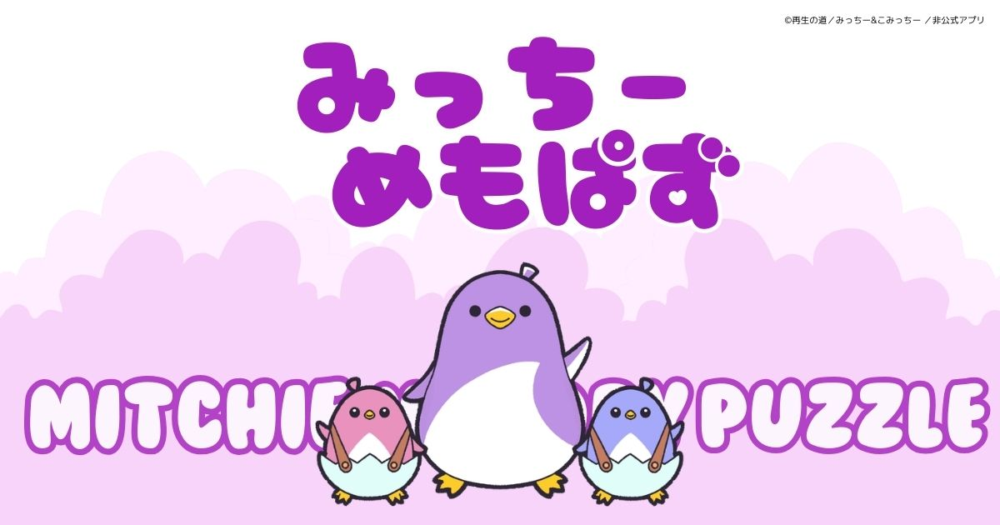
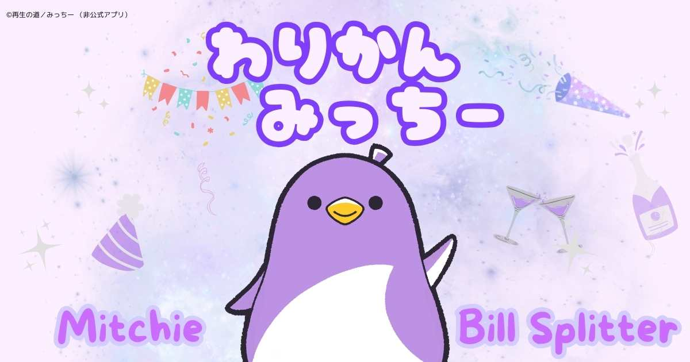
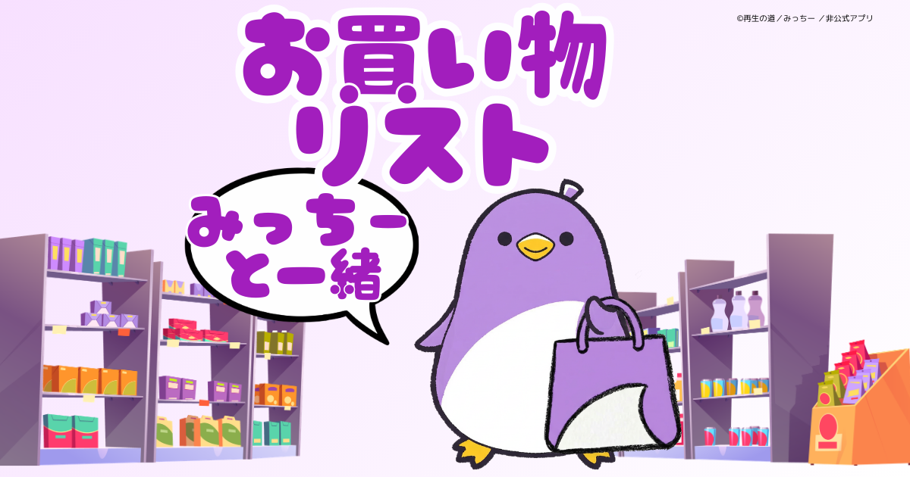
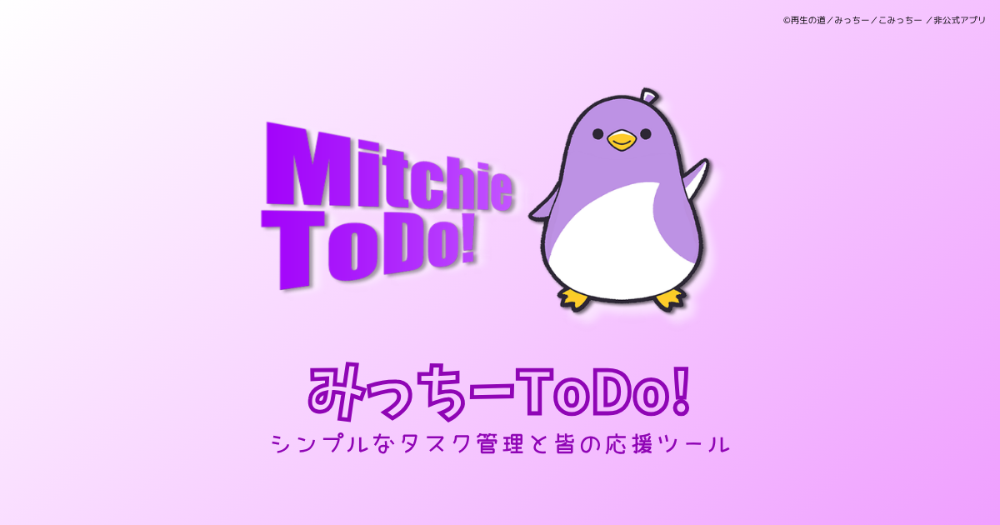

Approach
機能だけでなく、届き方まで設計する。
音楽や動画、note、アプリを通して、自分が本当に作りたいものを形にしていきたい。 それを届けたいと思っているけれど、必ずしも届くとは限らないし、そこに強制はしたくない。 だからこそ、自然に届くこと、そしてまた別の誰かが届けたくなることまで含めて、表現と導線を設計しています。 自然界が矛盾なく存在しているように、私たちもまた、自由に、自然に、ありのままに存在できればいい。そんな在り方を少しでも手伝える表現を目指しています。
Instagram投稿を読み込み中です。
Approach
音楽や動画、note、アプリを通して、自分が本当に作りたいものを形にしていきたい。 それを届けたいと思っているけれど、必ずしも届くとは限らないし、そこに強制はしたくない。 だからこそ、自然に届くこと、そしてまた別の誰かが届けたくなることまで含めて、表現と導線を設計しています。 自然界が矛盾なく存在しているように、私たちもまた、自由に、自然に、ありのままに存在できればいい。そんな在り方を少しでも手伝える表現を目指しています。

Custom GPTs
私の投稿を学習させたGPTs。これまでの発信トーンや視点を引き継ぎながら、kanachiらしい対話やアイデア整理ができるAIです。
AI kanachi を開くSelected Works
日常に溶け込むアプリを届けます。


少ない入力で割り勘計算から精算まで進められる、シンプルにも使えて細かい精算もできる会計用Webアプリ。可愛いキャラクターでさりげない話題作りに。

みっちーと一緒に使える、親しみやすいお買い物リストアプリ。日々のお買い物タイムを少し楽しくしてくれます。

みっちーと一緒に使える、親しみやすいTodoアプリ。日々のやることを軽やかに整理しながら、自分のペースで続けやすく使えます。
Music
楽曲やMVを通して、そのときどきの感情や景色を届けます。
音楽リリースやMV、サウンドの世界観をまとめて追えるYouTubeチャンネルです。

Political Channel
音楽と政治を融合させた独自の政治チャンネルです。
政治は、言葉で伝えるもの。けれど、言葉だけでは伝わらないものも、きっとある。 このチャンネルでは、情報や主張だけでなく、音、間、空気感、ふとした表情や佇まいまで含めて、政治の在り方そのものを表現しようとしています。
チャンネルを見る
政治は、言葉で伝えるもの。けれど、言葉だけでは伝わらないものも、きっとある。 該当演説の内容そのものではなく、言葉のない、ふとした瞬間、そんな何気ないシーンを中心に編集しました。
動画を見る
再生の道のマスコットキャラクター「みっちー」が誕生しました。 企画されたキャラクターCM動画投稿コンテスト用の動画を拡張し、広く国民が政治に参加するイメージを描きました。
動画を見る
衆議院選挙2026において全政党・全候補者を分け隔てなく応援したいと考えて創作。 無所属もボランティアも有権者も、無事に選挙を戦い抜いてほしいという願いを込めて。
動画を見るWriting
普段の目線からほぼ毎日投稿しています。哲学や心理学、政治、テクノロジーまで、日々の違和感や発見を自分の言葉で掘り下げています。
Contact / Links
DM等でご連絡ください。 活動全体を追うなら X のタイムラインや note の投稿をあわせてどうぞ。